All figures, solution names, teams and quotes are illustrative mock data. Use the Web part labels button on any page to show which SharePoint web part builds each block, and Page map to come back here.
Platform · CCS hub
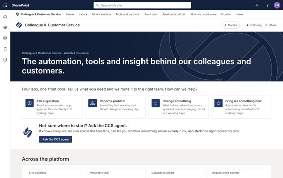
CCS hub home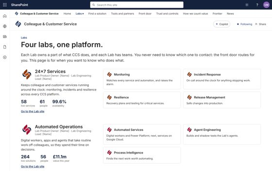
Labs (every Lab and its teams)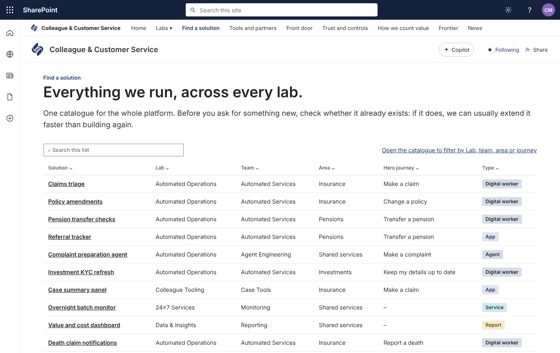
Find a solution (one catalogue for every lab)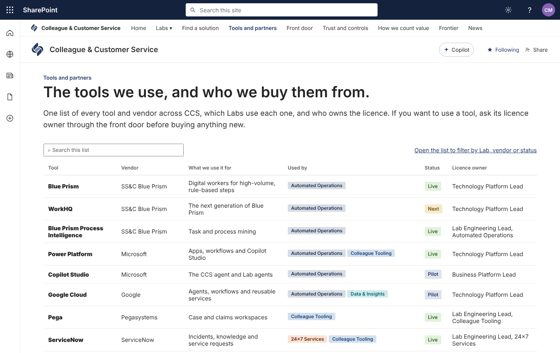
Tools and partners (one list for every Lab)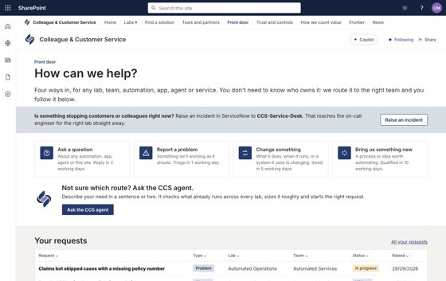
Front door (one intake for every lab and team)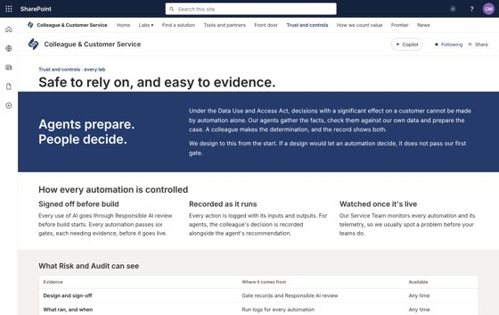
Trust and controls (one control framework for every lab)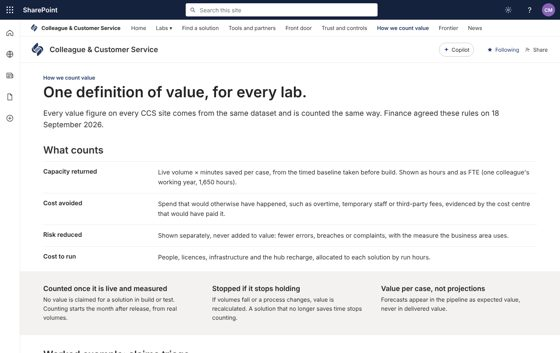
How we count value (one definition, agreed with Finance)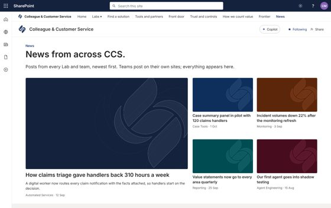
News (from every Lab)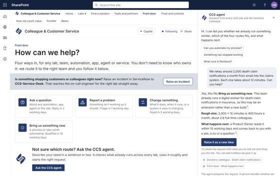
Front door with the CCS agent openLab · Automated Operations Lab hub
Lab · 24x7 Services (burnt orange)
Lab · Colleague Tooling (blue)
Lab · Data & Insights (teal)
Frontier · the CCS innovation forum (purple, Frontier mark)
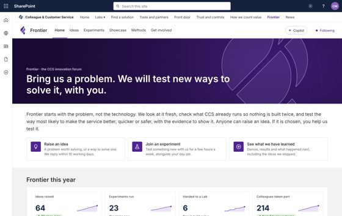
Home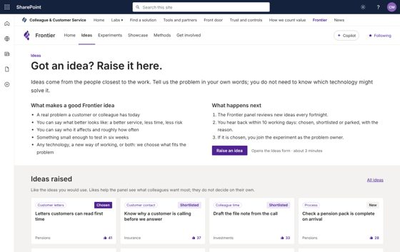
Ideas (raise an idea, ideas gallery with likes)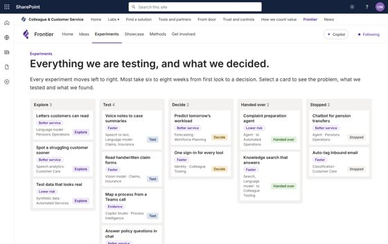
Experiments (board by stage)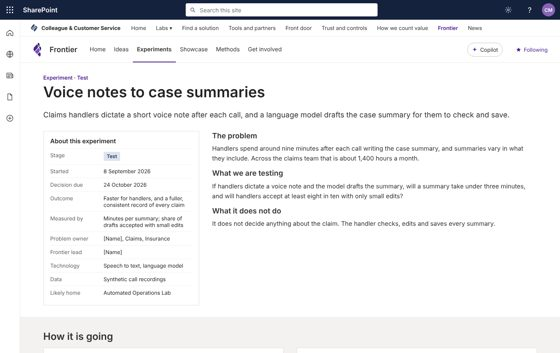
Experiment page (one per experiment, from a template)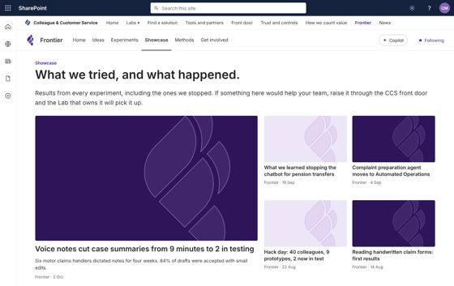
Showcase (results, demos, handed to Labs)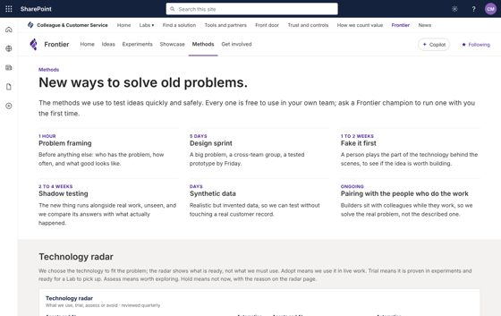
Methods and technology radar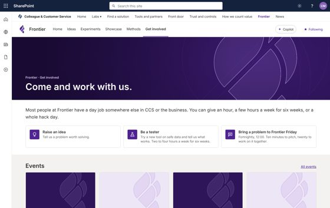
Get involvedTeam · Automated Services business site
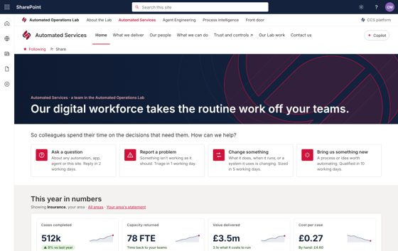
Home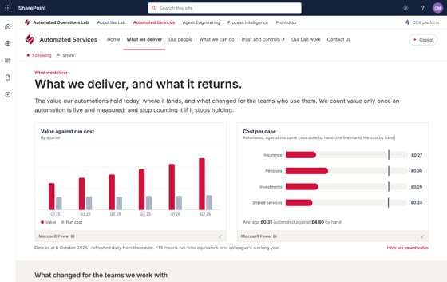
What we deliver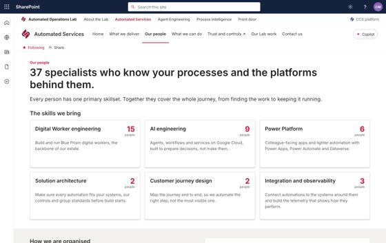
Our people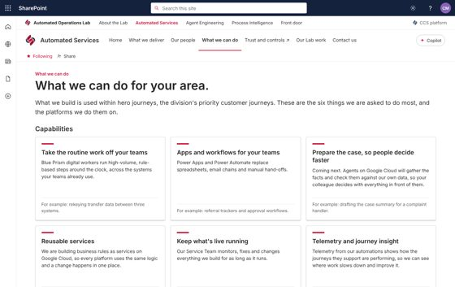
What we can do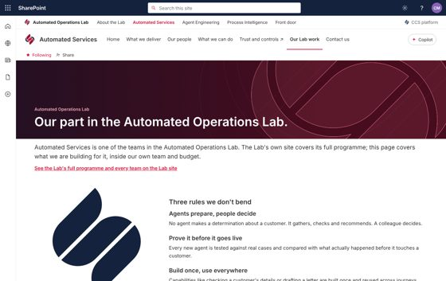
The Lab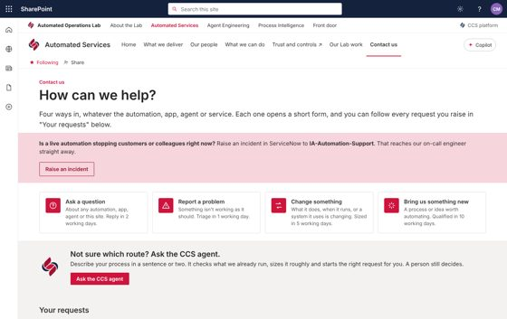
Contact us (the front door)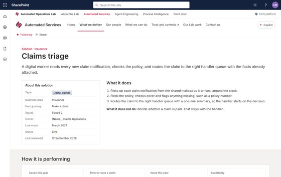
Solution page (one per live solution, from a template)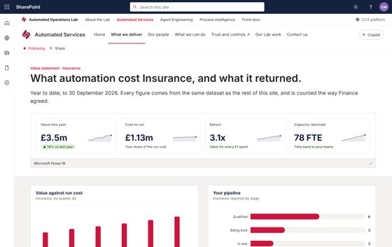
Value statement for one area (Power BI, row-level security)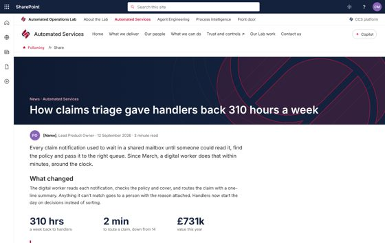
News post (template: every news post on every site)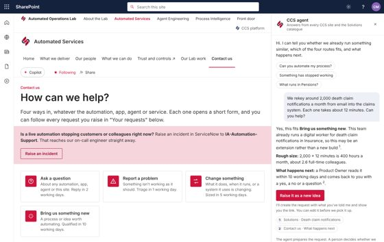
Contact us, with the site agent open